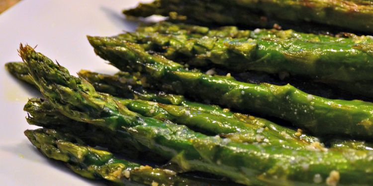

Home
Asparagus

Description
Roasted asparagus seasoned with garlic, lemon, and Parmesan cheese. This
recipe is super quick to prep and roasting removes any bitterness. Try it next to
lamb or grilled fish.
Ingredients
- 1 bunch thin asparagus spears, trimmed
- 3 tablespoons olive olive
- 1 ½ tablespoons grated Parmesan cheese
- 1 clove garlic, minced
- ¼ teaspoon sea salt, or to taste
- ½ teaspoon ground black pepper, or to taste
- 1 tablespoon lemon juice
Steps
- Gather all ingredients. Preheat the oven to 425 degrees F (220 degrees C).
- Place asparagus into a mixing bowl; drizzle with olive oil and toss to coat.
- Sprinkle with Parmesan cheese and garlic; season to taste with salt and pepper if using. Arrange asparagus in a single layer in a baking dish.
- Bake in the preheated oven until just tender, 12 to 15 minutes depending on thickness. Sprinkle with lemon juice just before serving.